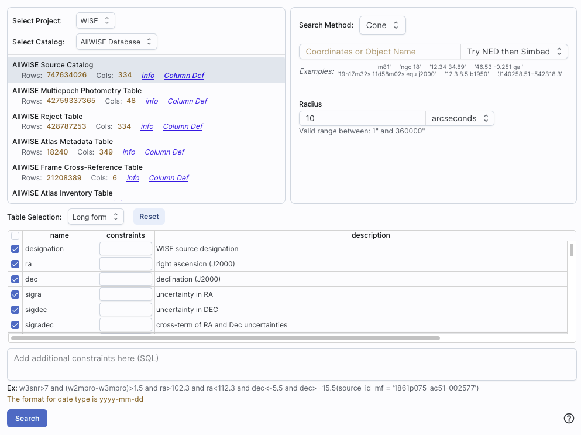
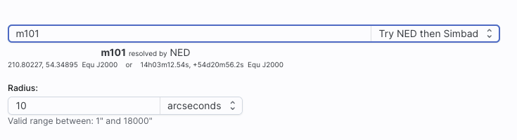
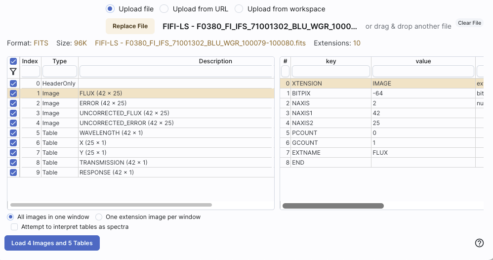
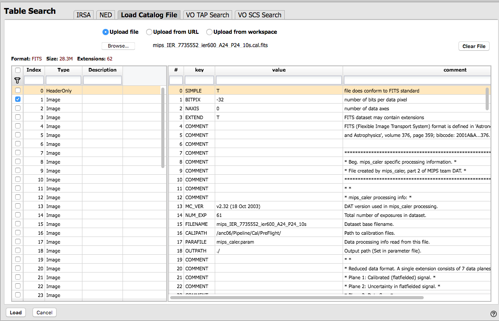
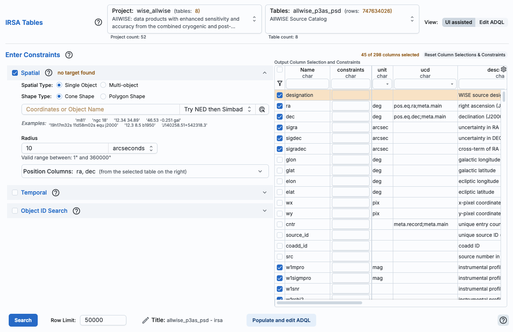
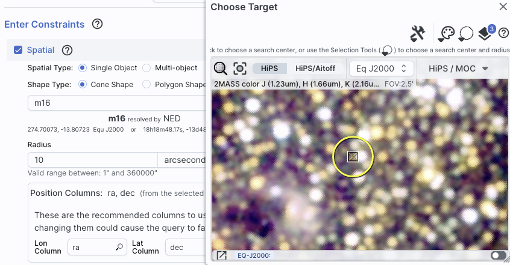
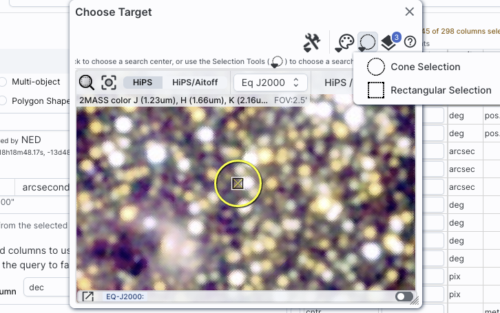
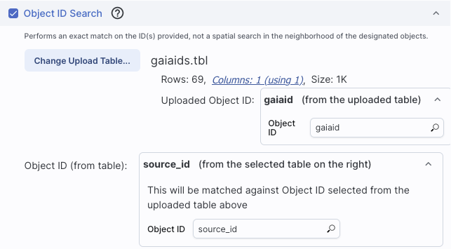
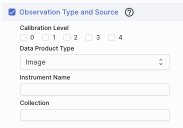

Firefly: Catalogs
Catalogs are a special case of tables; the
basic functionality of tables is covered in the Tables section. You can choose from any of a
wide variety of catalogs to load for overlaying on your visualized data. If you don't have an
image loaded, and you search on a catalog, the tool will pick an image
for you and overlay the catalog on that image. Once you've loaded a
catalog, there is a Details tab that may
describe the columns of the catalog, and you can make plots.
Contents of page/chapter:
+IRSA Catalogs -- Searching for catalogs from IRSA
+NED Objects -- Searching for NED objects
+Catalogs from Disk -- Loading catalogs from disk
+VO TAP Search -- Searching for catalogs via VO TAP services
+VO TAP: More about constraints
+VO SCS Search -- Searching for catalogs via VO SCS services
+Interacting -- Interacting with catalogs
+Details Tab -- More information about the columns
IRSA Catalogs -- Searching for catalogs from IRSA
By clicking on the blue "Catalog" tab (which also looks like a
button), a window appears with several options, as follows. By
default, it starts with the IRSA Catalog Search.

The upper left quadrant of this window is where you specify which
catalog you want to search. To change catalogs, first select the
"project" under which they are housed at IRSA, such as 2MASS, IRAS,
WISE, MSX, etc. The available choices underneath that change
according to the project you have selected. A short description is
provided for each of the catalogs, with links for more information
(including definitions of the sometimes cryptic column names); an
example is here:
The upper right quadrant of this window is where you specify the
target (the position can be pre-filled with its best guess as to what
you want) and the search method (cone, elliptical, box, polygon,
multi-object, all-sky), and the parameters that go with that search
method (e.g., the radius of the cone). The parameters for each of
these searches change dynamically as you select search options, as
follows:
- Caution:
- Pick your units from the drop-down
first, and then enter a number; if you enter a number and then select
from the drop-down, it will convert your number from the old units to
the new units. There are both upper and lower limits to your search
radius; it will tell you if you request something too big or too
small. Note that these limits are catalog-dependent.
- Cone search:
-

In this example, it has guessed a position, based on prior searches.
You specify the cone radius.
- Elliptical search:
-
In this example, it has guessed a position, based on prior searches.
You specify the search ellipse's semi-major axis, position ratio, and
axial ratio.
- Box search:
-
In this example, it has guessed a position, based on prior searches.
You specify the box's length on a side.
- Polygon search:
-
Now, note that it no longer has a single target location. It has
pre-filled the vertices of the position it thinks you want, based on
prior searches or the current image. You can select whether you want
the catalog request to match the entire area of the image you have
selected ("image"), or just the portion of the image you can see in
the current view ("visible"), or your own ("custom") area. The list of
vertices in the coordinates box are in decimal RA and Dec in degrees.
You must enter at least 3 and at most 15 vertices, separated by a
comma. Note that, for overlaying catalogs on HiPS images, you cannot
select "image", because HiPS images are generally very, very large, so
this would result in too many points being returned. There is a
maximum of 5 degrees imposed on catalog searches to match HiPS
images.
If you select a
rectangular region of your image (if relevant) and then select a polygon
catalog search, you will have a fourth radio button above, "selection",
which matches the corners of your selected image region.
- Multi-Object search:
-

In this case, it has not attempted to guess what position you want.
You need to upload a file (from your disk or the IRSA Workspace  ) in IPAC table format , which is a varietal of plain text. (IRSA has a table validator which may be helpful.) Note that you also have to
specify the radius over which to search for each of the targets in
your list.
) in IPAC table format , which is a varietal of plain text. (IRSA has a table validator which may be helpful.) Note that you also have to
specify the radius over which to search for each of the targets in
your list.
When you do a multi-position search on catalogs, three new columns are
added to the catalog as it is returned to you. These columns are :
- cntr_01 - the target position you requested
- dist_x - the distance between the target position you requested
and the object it found
- pang_x - the position angle between the target position you requested
and the object it found
These additional columns can help you assess if the target(s) it found is
the target that should be matched to the position you requested.
- All-sky search:
-
Because this is an all-sky search, it does not have a single target
entry box. In order to constrain this search, you need to impose
constraints on the bottom of the screen (see below).
The bottom of this window allows you to set restrictions on specific
columns. It gives you a list of all the available column names in the
corresponding catalog. (Most catalogs have identical "standard" and
"long form" selections, but some have more columns available in "long
form".) From here, you can choose what to display (tickboxes on the
left), and filter what is returned ("constraints" column). For
example, only return objects with values in column y that are greater
than x. If yoncatou add more than one restriction, they are combined
logically using an "AND" operators; be careful, because you can thus
restrict data such that none of the catalog meets your criteria.
Click on "Search" to initiate the search. It will load the catalog
into a tab of its own. The objects will also be overlaid on any images
you have loaded, and a default x-y plot will be shown. (For more on the
x-y plots, see Plots section.) All of these
representations are interlinked -- clicking on a row in the table
shows it on the image and in the plot, and clicking on an object in
the image shows it in the table and in the plot, and clicking on an
object in the plot shows it in the table and on the image.
To close the catalog search window without searching for a catalog,
click on "Cancel".
⚠ Tips and Troubleshooting
- If the catalog search is successful quickly, it will promptly return
the results in a tab of its own.
- The search may take a long time to return, especially
if you have asked for a large catalog, and you may think that nothing
has happened, but be patient and eventually it will
return a tab.
- Use large search radii with caution! Be sure you understand how many
sources you are likely to retrieve. Searches that retrieve more rows
will take longer. Searches that retrieve tens of thousands of rows
will take quite a while.
- If you want to impose additional constraints on the catalog during
your initial search, you can do so in the lower half of the screen
(e.g., SNR > n in some band, or an SQL command), you can place
constraints at this point. However, be advised that it is easy to
combine constraints such that no sources are retrieved!
- If you overlay a large catalog, large enough that the plot is a binned heatmap, the entire
source list is NOT overlaid, even if you zoom in a lot. The
way to work within these constraints is to impose a filter on the
catalog to get it below the threshold for a regular plot -- weed out
lower SNR sources, or filter based on RA/Dec, etc. Then all the
individual sources will be shown.
- If you overlay a large catalog, then turn around and save a regions file from
the catalog overlay, then unusual things can happen. If the plot
that results from the catalog is small enough to show individual
points in the plot, then all of the overlays will be saved to the
regions file. BUT if you have a plot with enough
points that it is a binned heatmap, the greatly abbreviated
("decimated") source list overlay will be saved, NOT
the entire catalog!
- If you have "pan by table row" turned on (see Visualization chapter),
then it may be disconcerting to have the images "jump" right after the
catalog loads. It is centering the selected catalog object (the first
one upon catalog loading) in the viewer. If you don't like this, turn
off "pan by table row".
- By default, it may show you fewer columns than are available in
the full catalog. By selecting "long form" (above the list of
columns), you can access the full range of available columns. In some
cases, there are literally hundreds of columns that you can access!
The search results are then shown and interacted with in the same way as the other
catalogs described here.
NED Objects -- Searching for NED objects
(NED= NASA
Extragalactic Database .)
By clicking on the blue "Catalogs" tab, you are by default dropped
into the interface for searching for catalogs at IRSA. However, you
can pick another tab, "NED", to search for and load objects from
a cone search at NED.

As for the other catalog searches, the tool pre-fills the target
position with its best guess of the coordinates of the target with
which you have been working. You can use an object name in place of
coordinates. Note that although NED is used for name resolution, the
actual search is then performed using coordinates, as opposed to name.
In this case, you are limited to a cone
search, so the next option is the cone search radius. Pick your units
from the drop-down first, and then enter a number; if you enter a
number and then select from the drop-down, it will convert your number
from the old units to the new units. There are both upper and lower
limits to your search radius; it will tell you if you request
something too big or too small.
From the NED results, you have one-click access to the fully detailed
information from NED on any object returned from such a search.
The search results will generally include a column "Details", though
you may have to scroll to the right to see it. Clicking on a link in
this column takes you directly to the full NED information display for
the selected object in a new window.
The search results are then shown and interacted with in the same way as the other
catalogs described here.
By clicking on the blue "Catalogs" tab, you are by default dropped
into the interface for searching for catalogs at IRSA. However, you
can pick another tab from the top, "Load Catalog File", to load your own
catalog.
You may upload a file from disk, from the web via a URL, or from the
IRSA Workspace .
You can use the system browser to find your file (accessible by
clicking "Browse"), or drag-and-drop your file into this part of the
browser window.
The file can be in any of a number of formats, which we now briefly
describe.
- IPAC table format (*.tbl)
- IPAC table format is plain text with a particular formatting. IRSA has a
table reformatting and validation service which may be helpful, or you
can download just about any catalog you find through IRSA, and mimic
that format.
Your table file MUST have RA and Dec values, and unless it is
specified, it assumes J2000. (See also "tips and
troubleshooting", below.)
You can add a "SYMBOL" parameter to change the shape
(X, SQUARE, CROSS, EMP_CROSS, DIAMOND, DOT) of catalog marks, e.g.:
\SYMBOL = X
You can add a "DEFAULT_COLOR" parameter to assign a CSS color name or
a HEX value to catalog marks, e.g., either of these two:
\DEFAULT_COLOR = lightcyan
\DEFAULT_COLOR = #00FF00
You can find the CSS color code or the CSS color HEX values online.
- Comma-separated values (CSV) format (*.csv)
- CSV format is often accepted by spreadsheet programs, and most
spreadsheet programs can output CSV. It is plain text, with values for
each column separated by commas.
- Tab-separated values (TSV) format (*.tsv)
- TSV format is sometimes accepted (or generated) by spreadsheet
programs, and sometimes in tabular data downloaded from journal
articles from the 90s. It is plain text, with values for each column
separated by tab characters.
- VOTable (*.vot)
- Virtual Observatory (VO) tables are a special case of XML tables.
(All VO Tables are XML but not all XML are VO Tables.)
It is a format developed by the International Virtual Observatory
Alliance (more information here ). XML
tables initially look to the human eye like it might be HTML, but they
are easier to parse with code. There are packages in astropy that
handle VO Tables.
- FITS files (*.fits)
- Flexible image transport system (FITS ) files are widely used in
astronomy and are an easy way to store images. FITS tables can be loaded
into this tool. Note that this tool is flexible enough to handle
multiple header data units (HDUs), so that you can upload a FITS file
that has both images and tables. You can specify which HDU you would
like to load, and if you choose more than one image, it will give you
a choice of loading them into individual frames or all into one frame.
For more information on loading images this way, see this section.
- Region files (*reg)
- Region files are plain text overlays originally used in ds9 . Regions files can be overlaid
on images (see here), but
they can be loaded from this portion of the tool, and overlaid on
images that way.
- MOC FITS files
- A multi-order coverage map (MOC) is a format developed by the
International Virtual Observatory Alliance to specify sky regions. You
might use this kind of file to describe the region over which a given
survey has observations. These files can also be loaded into this
tool.
- Data Link Table files
- A DataLink
is a protocol developed by the International Virtual Observatory
Alliance to specify more sophisticated linking of metadata and
services to the data itself. You might use this kind of file to
describe linkages to light curves or a light curve service from a
single-epoch catalog. These kinds of files can also be loaded into
this tool.
- UWS Table files
- A Universal Worker Service (UWS) Pattern
is a protocol developed by the International Virtual Observatory
Alliance to manage asynchronous execution of jobs on a service. These
kinds of files can also be loaded into this tool.
Nearly every file you load will result in a preview of the file you
have uploaded. Examples include the following:
Uploading a CSV file with many columns:

Uploading an IPAC table file with minimal columns:

Uploading a multi-HDU FITS file containing a mixture of tables and
images. (Note that in this case, all planes are selected and the lower
left gives a choice for loading all the images into one window or one
extension per window. Note also that it has the option of attempting
to interpret tables as spectra.)

Uploading a FITS file with multiple image planes where only one plane
is selected:

After you verify that the tool is reading your file correctly, and, if
applicable, selected the HDU(s) you wish to load, click "Load" to load
the file into the tool.
⚠ Tips and Troubleshooting
- If you would like to have your catalog overlaid on an image,
it needs to have RA and Dec columns. If the tool doesn't seem to
recognize your RA and Dec columns, check your formatting, or try
headers of "ra" instead of "RA" and "dec" instead of "DEC" or "Dec".
- Unless specified, the tool assumes any coordinates you give it are
J2000.
- If there are no discernible positions in the uploaded file, it
will still let you plot columns from the file after you've loaded it.
- If you have multiple HDUs in your file, you can load a plane, and
then come back to the the "Load catalog file" tab to pick another HDU
without having to upload it again.
The search results are then shown and interacted with in the same way as the other
catalogs described here.
VO TAP Search -- Searching for catalogs via VO TAP services
(VO= Virtual Observatory and TAP = table
access protocol .) TAP
services enable complex queries of tables using astronomical data
query language (ADQL ).
There are myriad places on the web to learn more about TAP queries and
ADQL. We just provide a brief overview here in the context of this
tool. This is what the search screen looks like by default:

- Just do it: a quick start
-
Select Table:
It comes up ready to search on IRSA Tables (in the IRSA TAP
service). Then you first need to select the "project" (sometimes
called "Table Collection" or "Schema" in other contexts). Then, having
selected that, the drop-down menu on the right changes to reflect the
tables available under that schema.
Then Enter Constraints:
On the left, you can impose a variety of constraints.
In addition to selecting the tickbox indicating that you wish to
impose a particular kind of constraints, you need to specify which
columns should be used for those constraints. More information on these constraints is
below.
On the right is a list of the columns in the selected
table, with tickboxes to indicate which columns will be returned. You
can also set constraints on the columns from here, following the same filter rules as for any tables
here. Above this section of the screen, there is an indication of
which columns are selected (e.g., 45 of 298 columns). You can reset
the column selection via the button here as well.
Then to actually do it, click "Search."
- Getting more out of it: Taking advantage of additional
options
- On the far right of the top row, there are two sets of buttons:
- Selecting a TAP
Service
- Next to "TAP Services", if you click on "show", you get this new
choice appearing at the top:

There are many TAP services available, worldwide. By default, this
tool uses IRSA's TAP service, but you can choose others via
the drop-down menu, or just start typing in your TAP URL.
Once you choose a different TAP service, the tables available to select
(further down on the page) change accordingly.
- Selecting a Query Type
- The second option in the upper right is "UI-assisted" or "Edit
ADQL". Especially when starting out, UI-assisted is easier. By using
the UI assisted" option, you can select pre-defined options and have
the interface construct the query in ADQL. Alternatively, if you are
already fluent in ADQL, you can select the second option, "Edit ADQL",
to construct even more complex queries.
After populating the search parameters using the UI, you can click the
button on the bottom, "Populate and edit ADQL" -- this takes the
parameters you have entered, creates the ADQL, and launches the "Edit
ADQL (advanced)" interface.
- Advanced ADQL
-

You can get to this screen by selecting "Edit ADQL (advanced)" in step
two, or by clicking on "Populate and edit ADQL" after filling out the
UI.
You can select the schema from the left side of the screen. Each of
the schemas can expand into viable tables and then columns within each
table via clicking on the "+" to the left of the folder icon. Click on
a column name to have it appear at the location of your cursor in the
ADQL query box on the right. If you have the tickbox checked on the
right that says "Insert fully-qualified column names", clicking on the
column name inserts fully-qualified column names at your cursor
location in the box.
You can type the ADQL directly into the box. If you configured a
search on the "UI assisted" page, this box is already pre-filled with
the ADQL version of your search, and you can proceed to edit it
further.
Examples of useful functions and queries are given on the lower
right of this window; you may need to scroll down.
⚠ Tips and Troubleshooting
- All the drop-downs near the top are searchable. This is very useful
if you are trying to find a particular table or service that you can't
quite recall. Click in the drop-down area, start typing a string, and it
will try to find the matching values.
- Not every table available via this interface even has RA/Dec or,
if it does, it may not be searchable via positions. If you have
selected a table that doesn't have positions, it will not yield
results if you try to search by position.
- There is a maximum number of returned rows at the bottom. If you
are anticipating more than this number of rows, increase this number!
- If you arrive at the advanced ADQL page from the "Populate and
edit ADQL" button, this is a one-way trip -- any changes you make to
the ADQL here are NOT transmitted automatically back to the "UI
Assisted" query page.
You can have several different ways of constraining your search
depending on the options you have selected before the "Enter
Constraints" section, and the options depend on what kind of service
is available at the TAP service you have selected. If the options do
not appear initially, click on the black triangle to "unfold" the
options.
- Enter Constraints:
Spatial
-
This part of the interface allows you to specify the details of a
spatial search. You need to specify both what kind of search you want
to do and which columns of the catalog are to be used for
coordinates.

| This is what it looks like when you do a single
target cone search; note that you have the same name
resolution options as in a simpler
search. |

|
And, this is what it looks like when you do a single target polygon
search. |
For both of these spatial searches, you can adjust the search via
clicking on a HiPS map. Click on this icon:  to bring up a window:
to bring up a window:
|  |
If you have entered a target already, the window arrives already
centered on the target. If not, it is centered on the galactic center,
zoomed out. If you have entered a cone search radius already, then the
circle drawn on the image is that cone size. You can manipulate this
image with the same basic tools as in the visualization tools.
|
|  |
To change the search region interactively, choose the selection
tools and draw a shape on the image.
Note that if you have selected a cone search on the
left, no matter what you select on the right, it will give you a cone
search. If you change the cone position or radius in the yellow boxes
after you change the selection, it will update the region in the
image. |
 |
If you want to quit out of the selection without changing, click on
"end selection" (the red text near the top of the image).
|
 |
If you select polygon on the left, and you use the selection tool for
"cone selection" on the right, you will get a spherical polygon
(a polygon where the line segments are on a sphere).
|
When you are done with this pop-up window, click on the 'x' in the
upper right of the window. Then you can continue to enter constraints,
or just search from this point.
 |
If you want to perform a multi-target search, click
on "multi-object", which automatically brings up this pop-up, from
which you can load a table from disk ("Upload tables" tab) or select
one of the tables you have already loaded into the tool (click on the
"Loaded tables" tab). Your uploaded catalog has to follow all the
same rules as normal catalogs from disk.
|
 |
After you select a file and upload it, the tool attempts to guess
which two columns are the position columns. In this example, it has
(correctly) guessed that the position columns are "ra" and "dec". If
it guesses wrong, or can't figure it out, you can help it along by
clicking on the black triangle to 'expand' that part of the panel and
selecting the two coordinate columns to use.
|
 |
Regardless of what configuration you use, the last thing to check is
which columns the tool has assumed are the position columns in the
catalog to be matched to your position, region, or list of positions.
Again, it attempts to make an educated guess as to the right columns,
but if it guesses wrong, you can help it along by clicking on the
black triangle to 'expand' that part of the panel and
selecting the two coordinate columns to use.
|
- Enter Constraints:
Temporal
-
This part of the interface allows you to specify which column of the
catalog is to be used for timing, and allows you to constrain the date
in two different systems.
| This is what the panel looks like initially, where you
specify the column with the time and then the dates:
|  |
| If you click
on the calendar icon at the far right of the entry box, you get a
pop-up from which you can specify the date, shown here. |
|
| Click on the
time below the calendar pop-up to select a time of day, if necessary.
Click on the date at the top of the pop-up to go back to the month
view. |
 |
|
If you would
like to work in MJD instead of ISO dates, select the "MJD" radio
button. Note that it echoes below the box what it thinks you've
entered in two different systems (UTC and MJD) to verify what you
have entered. | |
- Enter Constraints:
Object ID
-
This part of the interface allows you to match object IDs.
| This is what the panel looks like initially:
|  |
| This is what the panel looks like after you have
selected your uploaded list of IDs (in this case, a file called
"gaiaids.tbl", which consists of an IPAC table file that is just the
list of Gaia IDs, in a column called "gaiaid"), and it is being
matched against the Gaia DR3 main catalog, where the relevant catalog
is "source_id".
|  |
⚠ Tips and Troubleshooting
- The names have to match exactly, so in the case of this example,
since the Gaia column source_id is a long, the IPAC table file must
also cast the Gaia ID as a long.
- If the catalog to which you are matching is not indexed by the
name column you are using, the search may take a long time.
- If you are doing an object ID search, you need to turn off the
position search, otherwise it doesn't understand what you want it to
do.
- Enter Constraints:
Observation Type and Source
-
|  |
This panel provides a way to constrain the:
- Calibration level - 0 is the least processed and 4 is the most
processed, and not all instruments provide all levels
- Data product type - image, cube, spectrum, SED, time series,
visibility, event, measurement, or none specified. You can select more
than one of these at a time by using a right mouse click.
- Instrument name - must match exactly, wild cards not accepted
- Collection - must match exactly, wild cards not accepted
|
- Enter Constraints: Location
-
 |
This panel provides a way to constrain the location of your
search. You can specify via the drop-down the type of your query:
"observation boundary contains point", "observation boundary contains
shape" (default), "observation boundary is contained by shape",
"observation boundary intersects shape", and "central point (s_ra,
s_dec) is contained by shape." The latter refers to the columns "s_ra"
and "s_dec" in the ObsTAP table.
|
- Enter Constraints: Timing
-
|
This panel provides a way to constrain the observation time of your
search. This is the default option, where you want data
completed in the last x hours.
|
|
This is the alternate option, where you want data
overlapping a specified date range, where you can specify UTC or MJD
times.
|
- Enter Constraints:
Spectral Coverage
-
 |
This panel provides a way to constrain the spectral coverage of your
search. This is the default option, where you want data
containing a given wavelength.
|
 |
This is the alternate option, where you want data
overlapping a specified wavelength range.
|
The search results are then shown and interacted with in the same way as the other
catalogs described here.
VO SCS Search -- Searching for catalogs via VO SCS services
(VO= Virtual
Observatory and SCS =
simple cone search.)
By clicking on the blue "Catalogs" tab, you are by default dropped
into the interface for searching for catalogs at IRSA. However, you
can pick another tab, "VO SCS Search", to search for
and load catalogs from the VO simple cone search services.

As for the IRSA catalog search, the tool tries to pre-fill the target
position with the coordinates of the target with which you have been
working. In this case, you are limited to a cone search, so the next
option is the cone search radius. As usual, pick your units from the
drop-down first, and then enter a number; if you enter a number and
then select from the drop-down, it will convert your number from the
old units to the new units. There are both upper and lower limits to
your search radius; it will tell you if you request something too big
or too small.
If you know your VO URL already, you can jump down to the Cone Search
URL box and type or paste your URL into the box and hit search.
More commonly, however, users do not know a priori which URL
to use. Click on "Find Astronomical Data Resources" to be dropped into
a VO search. Find the URL corresponding to the catalog you want, copy
it, and go back and paste it in the URL box. The URL should not have
the RA and Dec in it; the tool will add your RA and Dec as listed to
the URL in the right syntax. Click on
"Search" to initiate the search.
The search results are then shown (and interacted with) in the same way as
the other catalogs described here.
Example
Load the tool. Search on IC1396. Go to the catalogs tab. Choose "VO
Catalog." It wants the root URL for a cone search. Click on "Find
Astronomical Data Resources", which goes here . Search on IPHAS. Get this page .
Look for the complete catalog release (not just one associated with
one specific study). The name of the catalog goes here . Hit
the [+] to expand it. There is one URL listed there, under "available
endpoints for the standard interface." Copy that URL and paste it into
the search form. The IRSA tool will append your coordinates and radius
and return you a table.
⚠ Tips and Troubleshooting
-
Note that searching the VO means that you are using resources not
specifically housed at IRSA, so servers may be down, or timeouts set,
or limits on numbers of returned sources, etc., that are beyond our
control. In most cases the solution is to specify as precise a search
as possible. The URL you enter into the box in Finder Chart must be a
Cone Search base URL (not containing RA and Dec parameters, which are
inserted into the URL by the tool in response to the search
parameters you give it).
- The master list of registries is here . You
can also search the registries directly via that link (as opposed to
via the IRSA tools).
The search results are then shown and interacted with in the same way as the other
catalogs described here.
When you load a catalog, the tools may create a table, a plot, and/or,
if your catalog has position information (e.g., RA and dec), it
overlays the catalog on an image. All three of these ways of
displaying the catalog are interlinked and interactive.
Catalogs are a special case of tables; the
basic functionality of tables is covered in the Tables section. You can sort and filter the
table.
Plots are also covered in a different
section. You can make scatter plots, heat maps, and histograms. You
can plot columns from your catalog, including simple mathematical
manipulations of catalog columns.
If the catalog has positions included and the tool has an image
display, the catalog will also be overlaid on an image. The Visualization section includes
information about that. Each catalog that you load is overlaid on
the image using different, customizable symbols and colors.
⚠ Tips and Troubleshooting
- Note that if you overlay a large catalog on an image, the full contents
of the catalog may not be displayed in the overlay. Catalog
overlays on images are statistically "thinned" to avoid overcrowding
the display. This occurs when the number of catalog entries in an
overlay exceeds 10,000. Currently, this thinning is not reversed even
when zooming in to the image. However, if you select a catalog entry
from its table, or from a point in an associated chart, the
corresponding point in the image display overlay will be displayed
even if that entry was originally "thinned out." Also, geometric
selections on an image (using the rectangle or circle tools) will
still select all the catalog entries in the selection region, even
ones that have been "thinned out", or "decimated."
- Because of the prior item, if you save the
overlays from an image as a regions file. If you initiate that save
from the image toobar, catalogs that have
been "thinned out" will not appear in their entirety in the resulting regions file.
However, you can save the full contents of a single
catalog as a regions file using the "save" (diskette) icon in
the table toolbar, instead of the image toobar.
If you load a catalog from IRSA, you will likely have an additional
tab on the right hand side, under the plot, called "Details." This
additional tab is sometimes called a "property sheet." This tab is,
itself, another Firefly table, and consists
of each of the columns of the retrieved catalog with additional
information about each field where available. (Not every catalog may
have this information available.) This information can be used to
learn more about each of the columns in retrieved. For additional
information, please consult the full documentation that accompanies
the catalog.
⚠ Tips and Troubleshooting
- The property sheet is a more expanded, vertical view of the
information shown in a row of a catalog, along with documentation of
the catalog columns. Because you can sort/filter the data in the
property sheet, you can restrict what values are shown. Those filters
are respected as you page through a catalog. So, for example (see
screenshot below), you can pull up the property sheet, filter it down
to only show the profile-fitted magnitudes and errors by filtering on
"mpro", and then step through the values in the catalog and inspecting
the brightnesses as shown in the property sheet for each source.
- When changing rows in the main table, the property sheet/details
tab scrolls to preserve the visibility of whatever row in the details
tab is highlighted. If you scroll down in the property sheet
without changing the highlight, when you change rows in the
main table, because the first row in any table is always highlighted
by default, the property sheet will scroll back to the top.